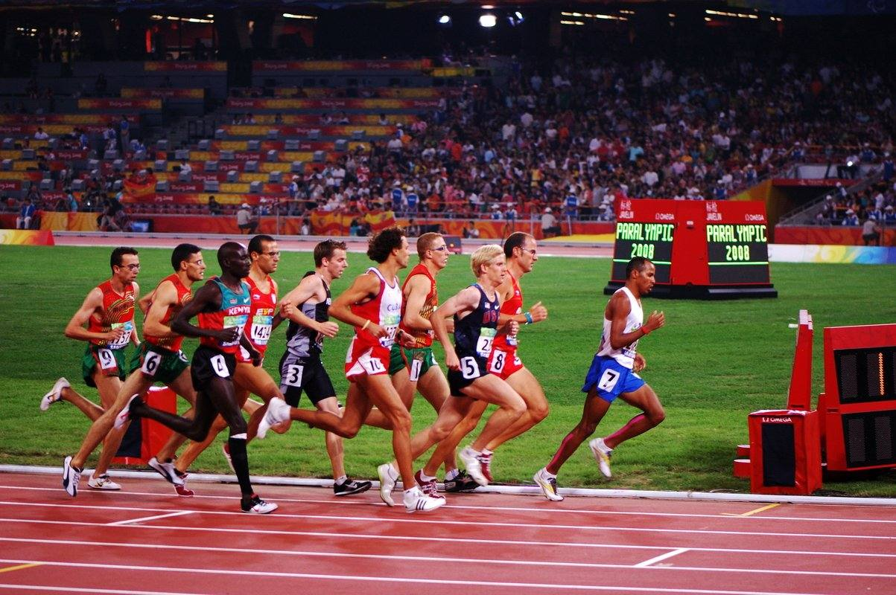

Sports · Other Sports
World Athletics Championships Beijing 27
- Dates
- –
- Venue
- Beijing (host city)
- Location
- Beijing, China
- Format
- In-person
- Category
- Other Sports
- Industry
- Athletics
- Organiser
- World Athletics
- Official website
- https://worldathletics.org/
- Tickets
- https://worldathletics.org/competitions/world-athletics-championships/beijing27
About
Dates are the official championships window of 10-19 September 2027 in Beijing. The record is pinned at city level because the official World Athletics host page fetched 24 Nov 2026 did not name a single stadium POI.
Topics: World Athletics Championships, athletics, track and field.
No organiser attendance figure found on the official pages fetched 24 Nov 2026 for this upcoming edition. Ranked by our estimated size tier 'very large' (100,000+ attendees/visits), a judgement from format, venue and scale, not an official number.